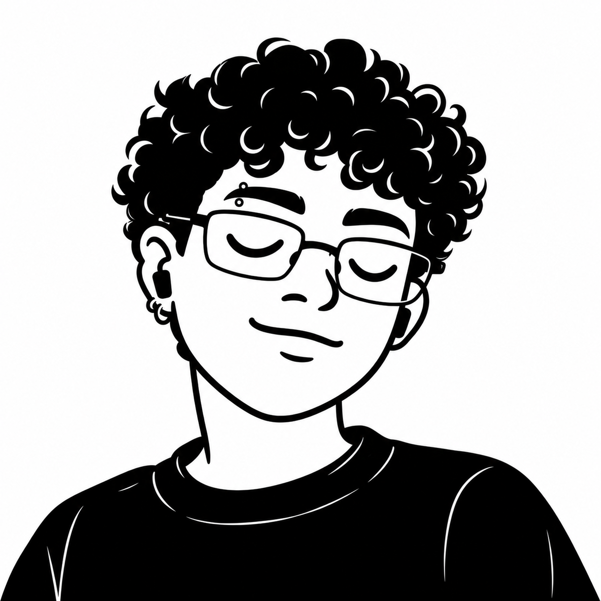

Em busca de oportunidade em tecnologias!
Olá, sou a Brenda. Vamos criar?
Transformo curiosidade em código. Sou estudante de ADS e construo projetos para aprender, resolver problemas e tornar a tecnologia mais acessível.
# Um pouco sobre quem eu sou
class Brenda:
nome = "Brenda Moreno"
formação = "ADS São Judas"
interesses = [
"Python", "Web", "Acessibilidade"
]
def próximo_passo(self):
return "Aprender + construir"
> curiosidade em execução
Sempre
aprendendo
01 / PROJETOS SELECIONADOS
Aprender fazendo.
BRENDA_OS v1.0
02 / MINHA CAIXA DE FERRAMENTA
Ideias ganham vida.
Com código.
As tecnologias que utilizo e estudo para dar formas às minhas ideias.
Interfaces Web
Estrutura, estilo e interação para experiências claras e organizadas.
Lógica de dados
Python como foco de desenvolvimento, com estudos de SQL e Java.
Ferramentas do dia a dia
Organização do código, ferramentas diversas, versionamento e ambientes para construir e aprender.

03 / SOBRE MIM
Minha história ainda
está sendo escrita.
Sou movida pela curiosidade e pela vontade de transformar desafios em soluções. Atualmente curso Análise e Desenvolvimento de Sistemas e tenho direcionado meus estudos para programação, com foco em Python e desenvolvimento back-end, além de conhecimentos em Java, SQL, JavaScript, Git e GitHub.
Minha trajetória profissional me ensinou a ser responsável, organizada, analítica e a aprender rapidamente. No PCP, desenvolvi ainda mais minha capacidade de lidar com dados, identificar problemas e buscar melhorias nos processos — habilidades que levo diretamente para a tecnologia.
Busco uma oportunidade para provar meu potencial, contribuir com dedicação e transformar conhecimento em resultados reais. Talvez eu ainda esteja no início da minha carreira como desenvolvedora, mas tenho algo que considero essencial: iniciativa, disposição para aprender e determinação para evoluir constantemente.
Rotina.txt
- ☑ Estudar
- ☑ Codar
- ☑ Projetar
- ☐ Café ☕
- ☑ Evoluir
ADS • Universidade São Judas
Graduação em andamento
PCP • TONDO S.A.
Processos, planejamento e sistemas
Aprendizado contínuo
Projetos, Python, desenvolvimento web e inglês
MINHA TRAJETÓRIA EM UM SÓ LUGAR
Conheça meu currículo.
Formação, experiências e habilidades para você conhecer melhor o que posso levar para a sua equipe.
04 / PRÓXIMO PASSO
Boas ideias começam
Boas ideias começam
com uma conversa.
Estou em busca de uma oportunidade para aprender com uma equipe, contribuir com projetos reais e crescer em tecnologia.
Conheça meu trabalhoMeu foco profissional
Desenvolvimento com foco em Python, construção de interfaces web modernas e acessíveis, modelagem com SQL e aplicação prática de boas práticas de código e agentes inteligentes.
O que levo para uma equipe
Raciocínio lógico lapidado no PCP (planejamento e controle de produção), organização analítica, facilidade para assimilar novos fluxos com rapidez, comunicação transparente e determinação para evoluir constantemente.